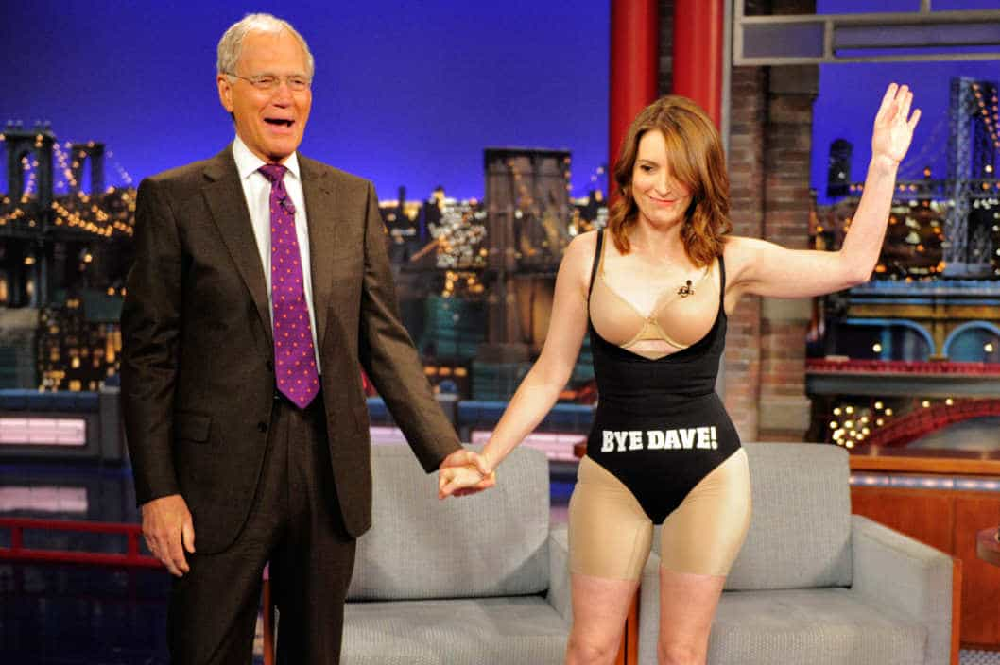

< < < Back
Why Do Female Comedians Need To Constantly Take Their Clothes Off? – Return Of Kings
The August issue of GQ created a storm of controversy this month for its cover featuring “comedienne” Amy Schumer scantily dressed as Star Wars character Princess Leia. With the droid C-3PO standing next to Schumer and his finger being phallically placed in her mouth, the cover was just the teaser for a series of erotically-themed photographs inside.
The first cousin once removed of New York Senator Chuck Schumer is not the first “funny woman” to resort to taking off her clothes to get attention, in between lambasting the supposedly “sexist” and “unequal” comedy “boys’ club.”
Chelsea Handler, Kathy Griffin, and Tina Fey have all opted to fight the patriarchy in recent times by sexualizing themselves to the hilt. Simultaneously, they continue to ride the feminist freight train, implicitly asking fans to support them because they epitomize the rise of a female comedy scene not only equal to but superior to the men’s brand.
As they do this, the actual jokes they tell are lost amidst the boobs, cleavage, posteriors and spandex. Oh, and the regurgitation of the feminism.
George Carlin Didn’t Need To Use His Body To Sell Shows Or Other Performances
When you look at the female comedy world, the emphasis of late has been on staged scandals and attention grabs. Though she didn’t bare her breasts (in this particular incident at least), Sarah Silverman claimed that she used to be “paid less than men” for performing. What she conveniently left out was that at this time she was at the beginning of her career, non-famous and paled in comparison to the well-known figures whose gigs she often introduced. My colleague Matt Forney covered this story earlier this year at Return of Kings.
Because contrivances like Silverman’s are less visceral and not-in-your-face, female comedians desiring the public spotlight have had to resort to other mechanisms. Chelsea Handler has been a repeat offender at letting her sexualization, not her “comedy,” do the talking. In addition to her reenactment of Putin’s horseback riding in the picture above (where she left it to others to blur out her breasts), she has disseminated her nude photos on other occasions, including situations where wasn’t even trying to paint on the weak veneer of comedy (i.e. she just released a Kim Kardashian-style nude selfie).
Even “High-Brow” Comediennes Have Used The Booby Factor

Tina Fey’s headline-generating appearance to “farewell” talk show host David Letterman using her body and spandex shows the extent to which female comedy has degenerated. Of all the “front-list” female comedy performers, only Amy Poehler hasn’t resorted to either carefully-executed booby or body-flashing or asinine accusations of misogyny which are bereft of context (Silverman’s equal pay fantasy).
And this may have more to do with Poehler’s lack of body confidence, not a lack of actual desire to do it if she could. In addition, the star of Parks and Recreation not so subtlety imbues many of her fictional and non-fictional appearances with appeals to feminism, girls marching forward and other political trinkets.
In this vein, Fey is joining forces with the more unstable corners of female comedy, including the perennially attention-deprived Kathy Griffin. Griffin has stripped during New Year’s celebrations in front of (gay) Anderson Cooper, to promote or during appearances on Jay Leno and David Letterman, and to “raise awareness” of the Ice Bucket Challenge fighting Lou Gehrig’s Disease.
There are a series of other “events” involving her and removed clothes that I simply cannot keep track of and include in this piece. Whether naked or partially clothed, Griffin loves the attention. But can someone please remember one of her comedic acts?
Feminism And Female Comedy Are A Joke

Feminism will tell you in one breath that the sexualization of women is horrendous and in the next one turn a blind eye to women sexualizing themselves for massive economic gain and to attract viewers’ eyes. Women selling their bodies, even mediocre or aging ones, is not restricted to modeling, pornography and everyday narcissism on Instagram.
In the absence of the proper means to adequately compete with male comics, Schumer, Handler, Fey and Griffin have to parlay their appendages and sheer sexual innuendo to get by.
The result? Female comedy is a circus, rather than a collection of acts that actually make people genuinely laugh. And a woman taking her clothes off has long been an old joke.
Read More: You Will Be Banned If You Reply To A Female Commenter